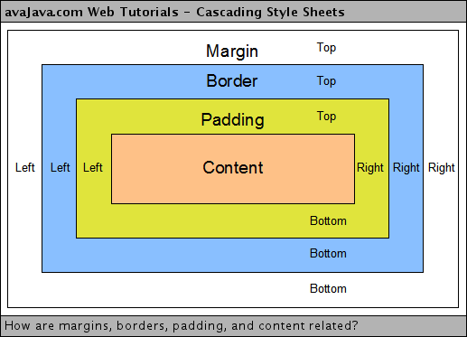
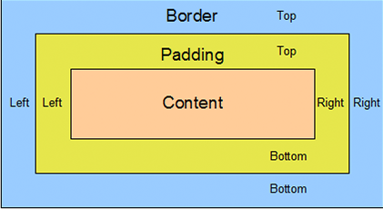
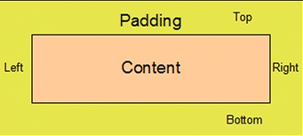

TECHNICAL BLOG
MARGIN
The properties that are used to create space around elements, outside of any defined borders.

BORDER
The property that accepts mutiple values for drawing a line around the element it is applied to.

PADDING
The properties that are used to generate space around elements content inside of any defined borders.

MARGIN PROPERTIES
- The margin: Specifies a shortland property for setting the
margin properties in one declarations
- The margin bottom: Specifies the bottom margin of an element.
- The margin top: Specifies the top margin of an element.
- The margin left: Specifies the left margin of an element.
- The margin right: Specifies the right margin of an element.
BORDER PROPERTIES
- The border colour: Specifies the colour of a border.
- The border style: Specifies whether a border should be
solid, dashed line, double line, or one of the other possible.
- The border width: Specifies the width of a border.
PADDING PROPERTIES
- The padding bottom: Specifies the bottom padding of an element.
- The padding top: Specifies the top padding of an element.
- The padding left: Specifies the left padding of an element.
- The padding right: Specifies the right padding of an element.
- The padding: Serves as shortland for the precreding properties